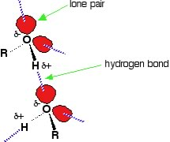
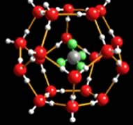
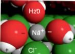

| Chapter 6.3: Hydrogen bonds and solubility |
So how does adding hydroxyl groups increase
the solubility of a hydrocarbon in water? To understand this we return
to the two components of the free energy equation, enthalpy and entropy.
For a solute to dissolve in a liquid the solute molecules must be
dispersed in that liquid. Solubility will depend upon how many solute
molecules can be present within a volume of solution before they
begin to preferentially associate with themselves (rather than the
solvent molecules). When the solute molecules are dispersed, whatever
bonds or attractions holding the particles together in the solute
will be replaced by interactions between solvent and solute molecules.
You might now reasonably suspect that one reason that diamonds are
not soluble in water is that the C-C bonds holding a carbon atom
within a diamond are much stronger (that is, take more energy to
break) than the possible interactions that could be formed between
carbon atoms and water molecules. |
6.1 Solutions |
So do intermolecular interactions explain everything about solubility? Does it explain the differences between the solubilities in water of hexane, hexanol, and hexanediol? Hexanediol (HO(CH2)6OH) is readily soluble, and if we consider its structure we would predict that interactions between hexanediol molecules would include hydrogen bonding (involving the two hydroxyl groups) and van der Waals interactions. We can approach this from a more abstract perspective. If we indicate the non-hydroxyl (–OH) part of a molecule as “R”, then an alcohol molecule can be represented as R–O-H, and a diol could be represented as HO-R-OH. Note that In water, R represents H! All alcohols have the ability to hydrogen bond with each other - and with water. So when an alcohol dissolves in water, the interactions between the alcohol molecules are replaced by interactions between alcohol and water molecules - an interaction similar to that between water molecules. Like water molecules, alcohols have a dipole (unequal charge distribution), with a small negative charge on the oxygen(s) and small positive charges on the hydrogen (bonded to those oxygen atoms). It makes sense that molecules that have similar structures will interact in similar ways - and so small molecular weight alcohols can dissolve in water. But if you look again at the table, notice that hexanol (a 6 carbon chain with one O–H group, is much less soluble than hexanediol (a 6 carbon chain with two O-H groups - one at each end). As the non-polar carbon chain lengthens, the solubility typically decreases. However if there are more O–H groups present, there are more possible interactions with the water. |
| This is also why common sugars, which are really polyalcohols with large numbers of O–H groups (at least 4 or 5 per molecule), are very soluble in water.Their O–H groups form hydrogen bonds with water molecules to form stabilizing interactions. As the length of the hydrocarbon chain increases - the non-polar (hydrocarbon) part of the molecule starts to become more important, and the solubility decreases. This phenomenon is responsible for the “like dissolves like” statements that are often found in introductory chemistry books (including this one, apparently.) So do intermolecular interactions explain everything about solubility? Sadly, things are not so simple! |  |
The fact that oil and water don’t mix is well known,
it has even become a common metaphor for other things that don’t
mix (people, faiths, etc). What is not quite so well known is, Why?
Oil is a generic name for a group of compounds, many of which are hydrocarbons
or contain hydrocarbon-like regions. Oils, for want of a better word
are oily - they are slippery (and to risk being tedious) do not mix
with water. The molecules in olive oil or corn oil typically have a
long hydrocarbon chain of about 16-18 carbons. These molecules often
have polar groups called esters (that is: groups of atoms that contain
C–O bonds) at one end, but once you get more than 6 carbons in
the chain, these groups do not greatly influence solubility in water
- just as the O–H groups in alcohols do not influence solubility.
So, oily molecules are primarily non-polar and interact with one another,
and with other molecules (including water molecules), primarily through
London dispersion forces. When oil molecules are dispersed in water,
the interactions between them and the water molecules will include
both LDF’s and water dipole - induced oil molecule dipole interactions.
Such dipole - induced dipole interactions are common and can be significant,
but if we were to estimate the enthalpy change associated with dispersing
oily molecules in water, we would discover ΔH is approximately
zero for many systems. That is the energy required to separate the
molecules in the solvent and solute is about equal to the energy released
when the new solvent-solute interactions are formed. Rest assured, there is a non-mystical explanation, but one that requires us to think at both the molecular and the system level. When hydrocarbon molecules are dispersed in water, the water molecules rearrange to maximize the number of H-bonds they make with one another. They form a cage-like structure around each hydrocarbon molecule. This cage of water molecules around each hydrocarbon molecule is a more ordered arrangement than that found in pure water, particularly when we count up and add together all of the individual cages! It is rather like the arrangement of water molecules in ice (although restricted to regions around the hydrocarbon molecule). This more ordered arrangement results in a decrease in entropy. The more oil molecules dispersed in the water, the larger the decrease in entropy. On the other hand, when the oil molecules clump together, the area of “ordered water” is reduced, fewer water molecules are affected. There is therefore an increase in entropy associated with the clumping of oil molecules, a totally counterintuitive idea! This increase in entropy leads to a negative value for –TΔS (because of the negative sign). The interactions between oil and water molecules are minimized, which leads to the formation of separate oil and water phases. Depending on the relative densities of the substances, the oily phase can be either above or below the water phase. This entropically driven separation of oil and water molecules is commonly (and unfortunately) referred to as the hydrophobic effect. Why unfortunate? Oil molecules are not afraid (phobic) of water and they do not repel water molecules; remember all molecules (unless they have a permanent and similar electrical charge) attract each other via London Dispersion Forces. |
Solubility of ionic compounds: salts Polar compounds tend to dissolve in water, and we can extend that generality to the most polar compounds of all - ionic compounds. Sodium chloride, the most common ionic compound, is soluble in water (360 g/L). Recall that NaCl is an ionic compound – a salt crystal is not composed of discrete molecules of NaCl, but rather is best described as an extended array of Na+ and Cl- ions bound together through electrostatic interactions. Therefore, when an ionic compound dissolves in water the electrostatic interactions within the crystal must be broken. In contrast, when molecular compounds dissolve in water, it is the intermolecular forces that are disrupted. |
 |
Now let us turn to changes in entropy. When a crystal of NaCl comes into contact with water, the water molecules interact with the Na+ and Cl- ions on the crystal’s surface. The positive ends of water molecules (the Hs) interact with the chloride ions, while the negative end of the of the water molecules (the O) interacts with the sodium ions. That is: an ion on the surface of the solid interacts with water molecules from the solution; these water molecules form a dynamic cluster around the ion. Thermal motion then moves the ion and its water shell into solution. |
| The water shell is highly dynamic - molecules are entering and leaving it. The “ion-dipole” interaction between ions and water molecules can be very strongly stabilizing (-ΔH). The process by which solvent molecules interact with and stabilize solute molecules in solution is called solvation; when water is the solvent, the process is known as hydration. |  |
Question to answer:
Questions for later:
|
| 28-Jun-2012 |